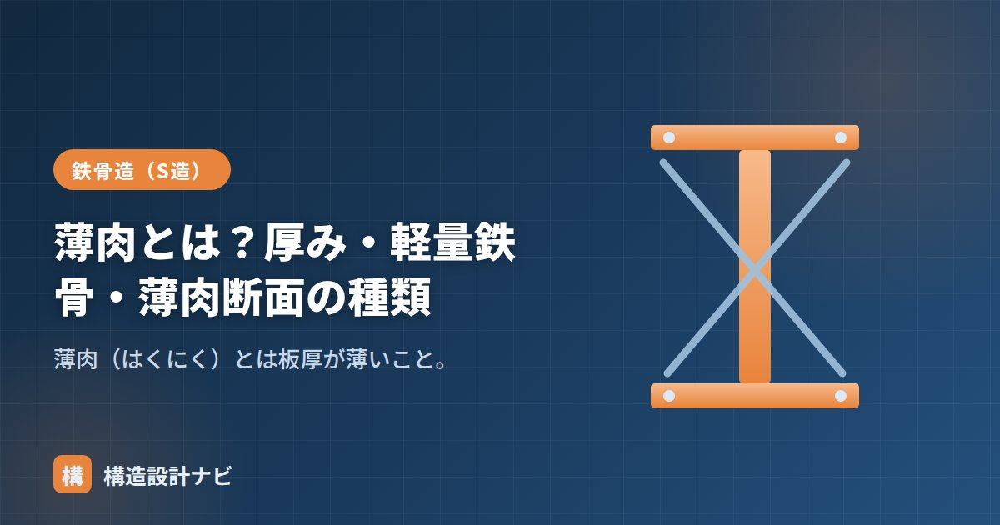

薄肉とは？厚み・軽量鉄骨・薄肉断面の種類

薄肉（はくにく）とは、鋼材などの板厚が薄いことを指す言葉です。軽量形鋼のように板厚おおむね1.6〜3.2mm程度の薄い鋼材を「薄肉」と呼び、軽量鉄骨造の骨組や下地材に広く使われます。薄いぶん軽くて経済的な一方、「局部座屈」という薄肉特有の弱点があり、厚板とは異なる設計上の配慮が必要です。この記事では、薄肉の読み方と意味、軽量鉄骨との関係、薄肉断面の種類、そして局部座屈への注意点を順に解説します。
- 薄肉は「はくにく」と読み、板厚が薄いことを表す。1.6〜3.2mm程度の軽量形鋼が代表。
- 板厚6mm未満の鋼材を主体とする鉄骨造が軽量鉄骨造。
- 薄肉断面は局部座屈が弱点。リップ等の形状で補い、接合はボルト・ビスが基本。
薄肉の読み方と意味
読み方は「はくにく」。鋼材の肉（板）が薄いことを表します。対義語は「厚肉（あつにく）」です。機械や配管の分野でも管の肉厚が薄いことを薄肉と呼ぶように、建築に限らず使われる用語ですが、鉄骨の分野では軽量形鋼（SSC400）やデッキプレートなどが薄肉の代表で、薄い鋼板をロールで折り曲げる冷間成形でつくられます。熱間圧延でつくるH形鋼などの厚肉材と違い、成形の自由度が高く、リップ付きなど複雑な断面形状にできるのが特徴です。
軽量鉄骨との関係
鉄骨造は、使う鋼材の厚さで大きく2つに分けられます。
| 区分 | 板厚の目安 | 主な用途 |
|---|---|---|
| 軽量鉄骨造 | 厚さ6mm未満（薄肉） | 住宅・店舗・小規模建物 |
| 重量鉄骨造 | 厚さ6mm以上 | 中〜大規模・ラーメン構造 |
このうち軽量鉄骨で使う、板厚1.6〜3.2mm程度の薄い軽量形鋼が「薄肉断面」です。ハウスメーカーの鉄骨系プレハブ住宅の多くは、この軽量鉄骨にブレース（筋かい）を組み合わせた構造です。また重量鉄骨造の建物でも、母屋・胴縁・天井下地など二次部材には薄肉の軽量形鋼が使われており、両者は建物の中で併用されるのが普通です。
薄肉断面の種類
- リップ溝形鋼（Cチャン）：薄肉の代表。軽量形鋼の主役。
- ハット形・Z形・溝形：母屋・胴縁などに。
- デッキプレート：床・屋根の下地となる薄板成形材。
いずれも「薄い板を折り曲げて断面性能を稼ぐ」という共通の発想でつくられています。板を平らなまま使うとすぐたわみますが、折り曲げて山や縁をつくると断面二次モーメントが大きくなり、少ない材料で強く・硬くできます。デッキプレートの波形も、リップ溝形鋼の折り返しも同じ理屈です。
局部座屈への注意
薄肉断面は、部材全体が曲がる前に薄い板そのものが波打つように座屈する「局部座屈」を起こしやすいのが弱点です。リップ（縁の折り返し）を付けて板を補強したり、許容応力度を低めに見込んだりして対処します。また薄いため溶接には不向きで、ボルト・ビス接合が基本です。
薄肉材は断面が薄いぶん、錆による断面欠損の影響が相対的に大きい点にも注意が必要です。厚さ3mmの板が1mm錆びれば断面は3分の1減ります。めっき（Zマーク金物やZAM等の表面処理鋼板）や塗装など、防錆処理の仕様確認が厚肉材以上に重要です。
軽量鉄骨造の耐震診断で古い建物を調べると、薄肉部材の錆による断面欠損が設計時の板厚より進んでいることがよくある。現地調査では実測値を優先し、図面上の板厚をそのまま信用しないようにしている。
軽量形鋼は「軽量形鋼」、材質は「軽量形鋼SSC400」、座屈は「座屈とは？」、板の薄さの指標は「幅厚比」をどうぞ。
まとめ
- 薄肉（はくにく）は板厚が薄いこと。1.6〜3.2mm程度の軽量形鋼が代表。
- 厚さ6mm未満の鋼材を使う鉄骨が軽量鉄骨造。重量鉄骨の二次部材にも薄肉材が使われる。
- 折り曲げて断面性能を稼ぐのが薄肉断面の発想。
- 薄肉断面は局部座屈と錆に注意。リップで補強し、接合はボルト・ビス。